Der Ostermarkt – Rollenspiel Gewichte mit Brüchen ½ ¼ ¾ kg, 3-fach differenziert (Klasse 4)

Ostereiersuche im Garten – Rollenspiel Lagewörter und Zählen bis 20, 3-fach differenziert (Klasse 1)

Der Faschingsumzug – Rollenspiel Zeitspannen und Fahrplan, Anfang und Ende berechnen, 3-fach differenziert (Klasse 3)

Der Faschingsladen – Rollenspiel Kombinatorik und Rechnen mit Geld, 3-fach differenziert (Klasse 2)

Materialpaket Rechenwelten im Winter für die 4. Klasse: 5 Mathe-Rollenspiele, 3-fach differenziert (Wintertombola, Schneeburg, Paketstation & mehr)

Materialpaket Rechenwelten im Winter für die 3. Klasse: 8 Mathe-Rollenspiele, 3-fach differenziert (Weihnachtsbäckerei, Lichterpark, Eisbahn & mehr)

Materialpaket Rechenwelten im Winter für die 2. Klasse: 6 Mathe-Rollenspiele, 3-fach differenziert (Weihnachtsmarkt, Kinderkino, Lebkuchen & mehr)

Materialpaket Rechenwelten im Winter für die 1. Klasse: 5 Mathe-Rollenspiele, 3-fach differenziert (Adventsmarkt, Plätzchenbäckerei, Wildpark & mehr)
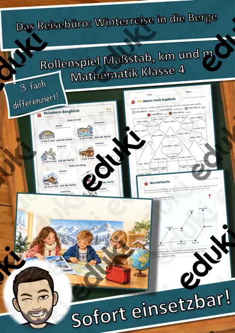
Das Reisebüro: Winterreise in die Berge – Rollenspiel Maßstab, Kilometer und Meter, 3-fach differenziert (Klasse 4)

Die große Winter-Umfrage – Rollenspiel Daten, Tabellen und Säulendiagramme, 3-fach differenziert (Klasse 3)

Der Spielzeugladen vor Weihnachten – Rollenspiel Münzen und Scheine bis 20 €, 3-fach differenziert (Klasse 1)

Der Weg durchs Wichteldorf – Rollenspiel Wege, Lagewörter und Schritte zählen, 3-fach differenziert (Klasse 1)
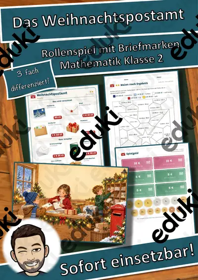
Das Weihnachtspostamt – Rollenspiel Rechnen mit Euro und Cent, gemischte Schreibweise, 3-fach differenziert (Klasse 2)
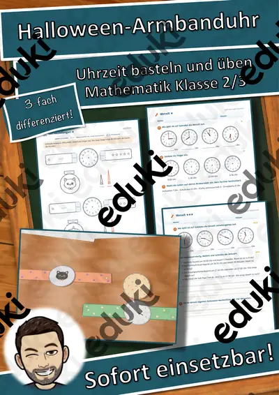
Halloween-Armbanduhr aus Papier – Uhrzeit lernen mit Bastelvorlage, 3-fach differenziert (Klasse 2/3)
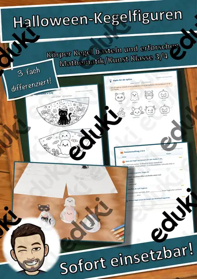
Halloween-Kegelfiguren – Körper Kegel basteln und erforschen, 3-fach differenziert (Mathematik/Kunst Klasse 3/4)

Die Kinderpunsch-Bar – Rollenspiel Brüche in Größen: ½ l, ¼ l, ¾ l und Milliliter, 3-fach differenziert (Klasse 4)
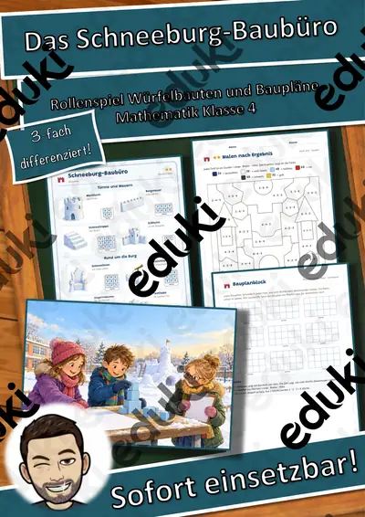
Das Schneeburg-Baubüro – Rollenspiel Würfelbauten, Baupläne und Rauminhalt, 3-fach differenziert (Klasse 4)
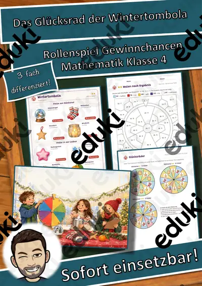
Das Glücksrad der Wintertombola – Rollenspiel Gewinnchancen und Wahrscheinlichkeit, 3-fach differenziert (Klasse 4)
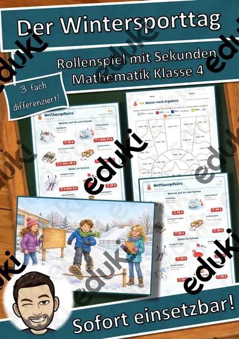
Der Wintersporttag – Rollenspiel Sekunden, Minuten und Sekunden umwandeln, Rangliste, 3-fach differenziert (Klasse 4)

Der Hofladen im Winter – Rollenspiel Hohlmaße l und ml, 3-fach differenziert (Klasse 4)

Die Schachtelwerkstatt fürs Fest – Rollenspiel Würfelnetze und rechter Winkel, 3-fach differenziert (Klasse 3)
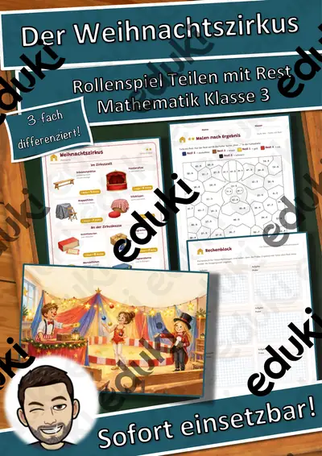
Der Weihnachtszirkus – Rollenspiel Division mit Rest, 3-fach differenziert (Klasse 3)

Der Plan für die Eisbahn – Rollenspiel Lagepläne, Flächen und Umfang, 3-fach differenziert (Klasse 3)
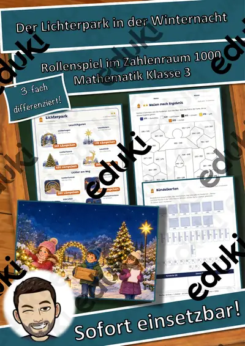
Der Lichterpark in der Winternacht – Rollenspiel Zahlenraum bis 1000, halbschriftlich und schriftlich rechnen, 3-fach differenziert (Klasse 3)

Mit dem Bus zum Christkindlmarkt – Rollenspiel Zeitspannen, Busfahrplan und Umsteigen, 3-fach differenziert (Klasse 3)
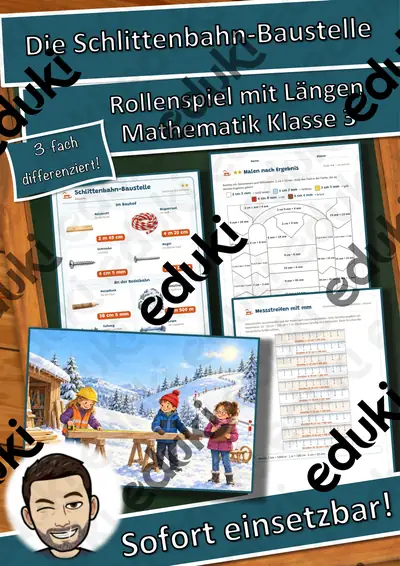
Die Schlittenbahn-Baustelle – Rollenspiel Längen km, m, cm und mm, 3-fach differenziert (Klasse 3)
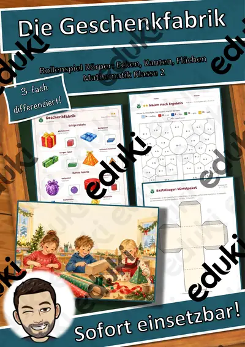
Die Geschenkfabrik – Rollenspiel Körper, Ecken, Kanten und Flächen, 3-fach differenziert (Klasse 2)

Der Bratapfelstand – Rollenspiel Einmaleins mit Geld, Euro und Cent, 3-fach differenziert (Klasse 2)

Die Lichterketten-Werkstatt – Rollenspiel Muster und Zahlenfolgen, 3-fach differenziert (Klasse 1)

Die Fensterbild-Werkstatt – Rollenspiel Formen, Muster und Symmetrie, 3-fach differenziert (Klasse 1)

Der Obststand auf dem Adventsmarkt – Rollenspiel Rechnen mit Geld bis 20 €, Rückgeld, 3-fach differenziert (Klasse 1)

Das Lebkuchenhaus – Quader, Netz und Oberfläche – Lesespurgeschichte mit Rätselaufgaben (Klasse 7)
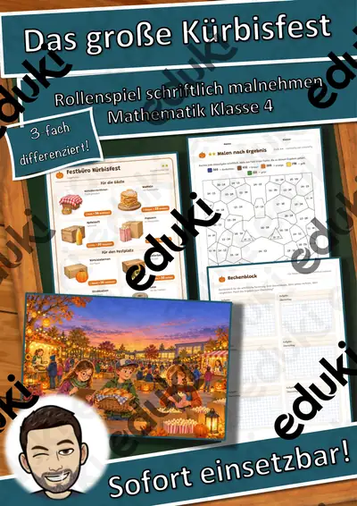
Das große Kürbisfest – Rollenspiel schriftliche Multiplikation und Überschlag, 3-fach differenziert (Klasse 4)
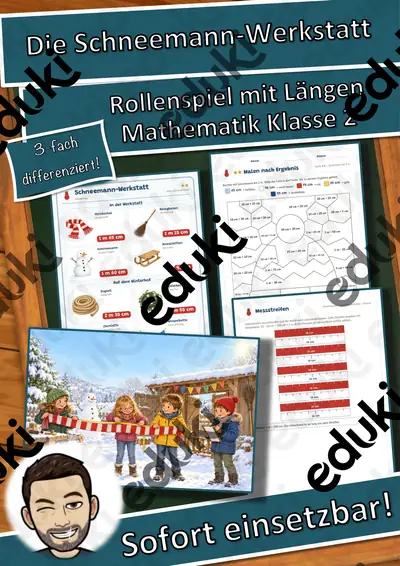
Die Schneemann-Werkstatt – Rollenspiel Längen m und cm, 3-fach differenziert (Klasse 2)

Das Kinderkino im Winter – Rollenspiel Einmaleins und Verteilen, 3-fach differenziert (Klasse 2)
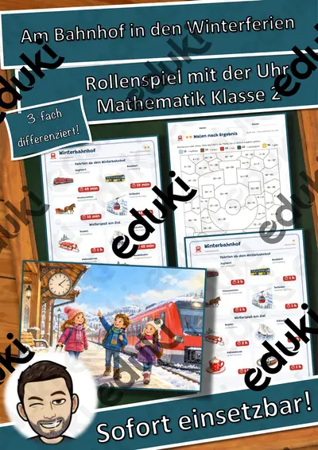
Am Bahnhof in den Winterferien – Rollenspiel Uhrzeit und Zeitspannen, 3-fach differenziert (Klasse 2)

Vogelzählung am Futterhaus – Rollenspiel Strichlisten auswerten und vergleichen, 3-fach differenziert (Klasse 1)
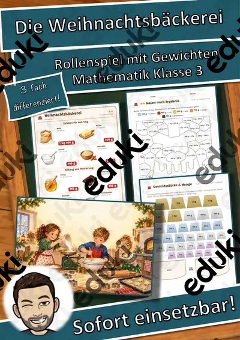
Die Weihnachtsbäckerei – Rollenspiel Gewichte kg und g, Rezepte verdoppeln, 3-fach differenziert (Klasse 3)

Winterfütterung im Wildpark – Rollenspiel Zahlen bis 20 zählen, zerlegen und ergänzen, 3-fach differenziert (Klasse 1)

Die Lebkuchen-Backstube – Rollenspiel Einmaleins und Teilen, 3-fach differenziert (Klasse 2)
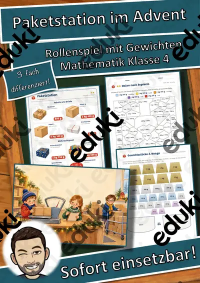
Paketstation im Advent – Rollenspiel Gewichte kg, g und t, Malnehmen mit Größen, 3-fach differenziert (Klasse 4)

Winterspiele im Schulhof – Rollenspiel Strichlisten, Vergleichen, sicher – möglich – unmöglich, 3-fach differenziert (Klasse 1)

Die Wichtelwerkstatt – Rollenspiel Zeitspannen, Anfang und Ende berechnen, 3-fach differenziert (Klasse 3)
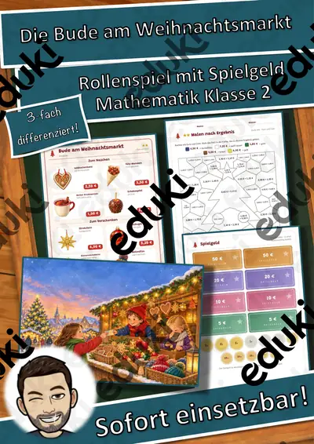
Die Bude am Weihnachtsmarkt – Rollenspiel Rechnen mit Geld, Euro und Cent, 3-fach differenziert (Klasse 2)
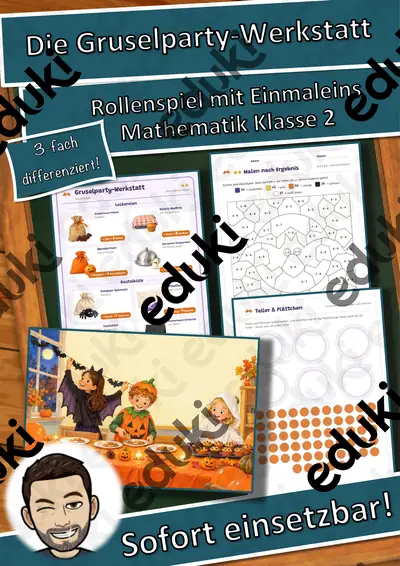
Die Gruselparty-Werkstatt – Rollenspiel Einmaleins und Verteilen, 3-fach differenziert (Klasse 2)

Die Plätzchenbäckerei – Rollenspiel Zahlen bis 20, Verdoppeln und Halbieren, 3-fach differenziert (Klasse 1)
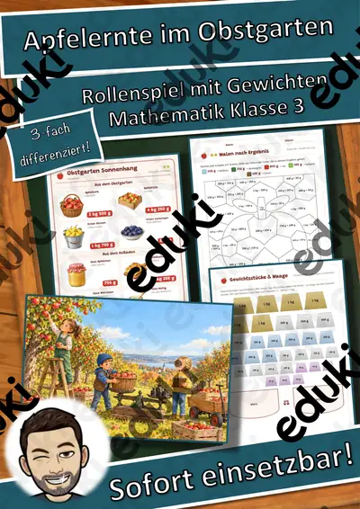
Apfelernte im Obstgarten – Rollenspiel Gewichte kg und g, 3-fach differenziert (Klasse 3)

Am Kürbisstand – Rollenspiel Rechnen mit Geld bis 20 €, 3-fach differenziert (Klasse 1)

Rechnen im Winter-Café – Rollenspiel Rechnen mit Geld, 3-fach differenziert (Klasse 2–4)

Quali Mathematik Teil A – rechnen ohne Taschenrechner – Lesespurgeschichte mit Prüfungsaufgaben (Klasse 9)

Brüche beim Erntefest – Bruchteile erkennen und vergleichen – Lesespurgeschichte mit Rätselaufgaben (Klasse 6)
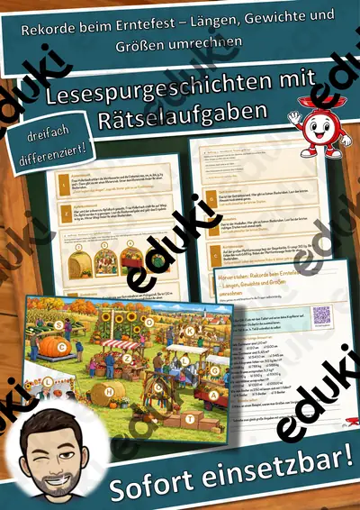
Rekorde beim Erntefest – Längen, Gewichte und Größen umrechnen – Lesespurgeschichte mit Rätselaufgaben (Klasse 5)
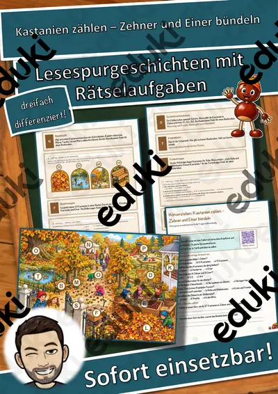
Kastanien zählen – Zehner und Einer bündeln – Lesespurgeschichte mit Rätselaufgaben (Klasse 2)

Zinsen berechnen – rund um den Weltspartag – Lesespurgeschichte mit Rätselaufgaben (Klasse 8)

Die Uhr wird umgestellt – Uhrzeiten lesen und Zeitspannen rechnen – Lesespurgeschichte mit Rätselaufgaben (Klasse 3)

Das Schulfest – Lesespurgeschichte mit Rätselaufgaben (Klasse 6)

Der Wochenmarkt – Lesespurgeschichte mit Rätselaufgaben (Klasse 7)

Prisma und Zylinder – Prüfungstraining Mathematik (Klasse 9)

Die Kreisberechnung – Prüfungstraining Mathematik (Klasse 8)

Quadratische Funktionen – Prüfungstraining Mathematik (Klasse 9)

Bruchrechnung – Prüfungstraining Mathematik (Klasse 8)

Potenzen und Wurzeln – Prüfungstraining Mathematik (Klasse 9)

Lineare Gleichungssysteme – Prüfungstraining Mathematik (Klasse 9)

Binomische Formeln – Prüfungstraining Mathematik (Klasse 8)

Statistik und Daten – Prüfungstraining Mathematik (Klasse 8)

Der Strahlensatz – Prüfungstraining Mathematik (Klasse 9)

Trigonometrie – Prüfungstraining Mathematik (Klasse 9)

Quadratische Gleichungen – Prüfungstraining Mathematik (Klasse 9)

Wahrscheinlichkeit – Prüfungstraining Mathematik (Klasse 8)

Flächen und Körper – Prüfungstraining Mathematik (Klasse 8)

Lineare Funktionen – Prüfungstraining Mathematik (Klasse 9)

Dreisatz und Zuordnungen – Prüfungstraining Mathematik (Klasse 8)

Terme und Gleichungen – Prüfungstraining Mathematik (Klasse 8)

Satz des Pythagoras – Prüfungstraining Mathematik (Klasse 9)

Prozent- und Zinsrechnung – Prüfungstraining Mathematik (Klasse 9)

Raumgeometrie – Körper und Formeln: Tafelposter, Kärtchen und Übungen in 3 Niveaus

Rechenheft Zahlenraum 1000: Hunderter, Zehner, Einer

Domino-Werkstatt: Domino Einmaleins mit Darstellungen – kostenlos, Klasse 2–4

Rechenheft Zahlenraum 100: Üben, Spielen, Kontrollieren

Rechenheft Zahlenraum 20: Übungsheft mit Selbstkontrolle

Domino-Werkstatt: Zahlen-Domino bis 100 – kostenlos, Klasse 1–2

Domino-Werkstatt: Domino Einmaleins mit Darstellungen – Plus-Paket, Klasse 2–4

Domino-Werkstatt: Zahlen-Domino bis 100 – Plus-Paket, Klasse 1–2

Daten & Diagramme zum Ausmalen – Strichlisten, Säulendiagramme Kl. 2–4

Weihnachts-Logicals: 6 Knobelaufgaben zur Weihnachtsbäckerei in 3 Stufen (Klasse 3–4)

Zahlenfunken Materialpaket: Blitzblick-Miniheft, Mengen-Klammerkarten, Zahlen-Bingo und Domino – Zahlen bis 10 sehen (Klasse 1)

Zahlenfunken: Zahlen-Bingo und Domino bis 10 – zwei Spiele zu Menge, Ziffer und Zahlwort in 3 Stufen (Klasse 1)

Zahlenfunken: Mengen-Klammerkarten Zahlen bis 10 – 30 selbstkontrollierende Karten in 3 Stufen (Klasse 1)

Zahlenfunken: Blitzblick-Miniheft Zahlen bis 10 – Mengen auf einen Blick erfassen, 3 Stufen mit Lösungen (Klasse 1, DaZ)

Rechenmosaik Igel – GRATIS-Sampler: Einmaleins lösen, kleben, ausmalen in 3 Stufen (Klasse 2–3)

Rechenmosaik Gesamtpaket: 10 Motive durch das Schuljahr, lösen – kleben – ausmalen (Klasse 1–4)

Rechenmosaik Paket Frühling und Sommer: 3 Motive, lösen – kleben – ausmalen (Klasse 1–4)

Rechenmosaik Paket Winter, Advent und Fasching: 4 Motive, lösen – kleben – ausmalen (Klasse 1–4)

Rechenmosaik Paket Herbst und St. Martin: 3 Motive, lösen – kleben – ausmalen (Klasse 1–4)

Rechenmosaik Eisbecher und Eistüte: Rechnen mit Geld – lösen, kleben, ausmalen in 3 Stufen (Klasse 3–4)

Rechenmosaik Frühlingsblume: Mal und Geteilt mit großen Zahlen – lösen, kleben, ausmalen in 3 Stufen (Klasse 4)

Rechenmosaik Osterhase: Plus und Minus bis 1000 – lösen, kleben, ausmalen in 3 Stufen (Klasse 3)

Rechenmosaik Faschingshut: Klammern und Punkt vor Strich – lösen, kleben, ausmalen in 3 Stufen (Klasse 3–4)

Rechenmosaik Weihnachtsbaum: Geteilt-Aufgaben (Division) – lösen, kleben, ausmalen in 3 Stufen (Klasse 3)

Rechenmosaik Adventskranz: Einmaleins 6er bis 9er – lösen, kleben, ausmalen in 3 Stufen (Klasse 3)

Rechenmosaik Schneemann: Verdoppeln und Halbieren – lösen, kleben, ausmalen in 3 Stufen (Klasse 2–3)

Rechenmosaik Laterne: Einmaleins 2er bis 5er und 10er – lösen, kleben, ausmalen in 3 Stufen (Klasse 2)

Rechenmosaik Herbstpilz: Plus und Minus bis 100 – lösen, kleben, ausmalen in 3 Stufen (Klasse 2)

Rechenmosaik Herbstdrachen: Rechnen bis 20 – lösen, kleben, ausmalen in 3 Stufen (Klasse 1)

Klassenarbeitstrainer Mathematik Klasse 9 – Quadratische Funktionen und Pythagoras

Ziffern-Schreibwerkstatt Materialpaket: Zahlen 0 bis 20 schreiben, zählen, verstehen – 3 Hefte in 3 Stufen (Vorschule, Klasse 1, DaZ)

Würfel-Malspur Materialpaket: 3 Themenhefte – Würfeln, Zählen, Malen in 3 Stufen (Vorschule, Klasse 1–2, DaZ)

Advents-Rätselreise Materialpaket Klasse 1–4: 3 Adventskalender mit Geschichten + Rätseln in 3 Stufen, QR-Audio

Ziffern-Schreibwerkstatt Zahlen 11 bis 20 im Weltall – Spuren, Schreiben, Zählen in 3 Stufen (Vorschule, Klasse 1, DaZ)

Ziffern-Schreibwerkstatt Ziffern 6 bis 10 im Meer – Spuren, Schreiben, Zählen in 3 Stufen (Vorschule, Klasse 1, DaZ)

Lern-Girlande Materialpaket: 3 Themenhefte – Ausmal-Anhänger mit Lernauftrag in 3 Stufen (Vorschule, Klasse 1–2, DaZ)

Würfel-Malspur Fantasie und Abenteuer – Würfeln, Zählen, Malen in 3 Stufen (Vorschule, Klasse 1–2)

Advents-Rätselreise Klasse 3/4 – Adventskalender: 24 Geschichten + Rätsel in 3 Stufen mit Lösungssatz
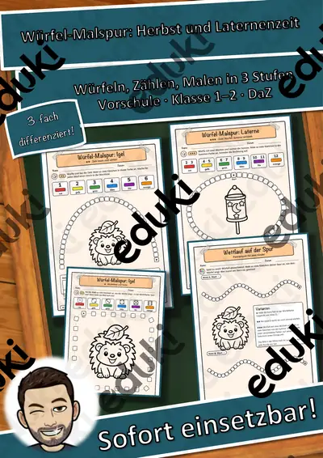
Würfel-Malspur Herbst und Laternenzeit – Würfeln, Zählen, Malen in 3 Stufen (Vorschule, Klasse 1–2)

Ziffern-Schreibwerkstatt Ziffern 0 bis 5 auf dem Bauernhof – Spuren, Schreiben, Zählen in 3 Stufen (Vorschule, Klasse 1, DaZ)

Advents-Rätselreise Klasse 2 – Adventskalender: 24 Geschichten + Rätsel in 3 Stufen mit Lösungssatz
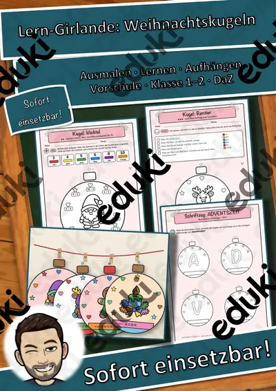
Lern-Girlande Weihnachtskugeln – Ausmal-Anhänger mit Lernauftrag in 3 Stufen (Vorschule, Klasse 1–2, DaZ)

Advents-Rätselreise Klasse 1 – Adventskalender: 24 Geschichten + Rätsel in 3 Stufen mit Lösungssatz
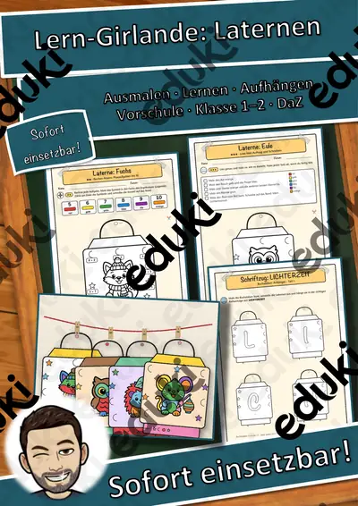
Lern-Girlande Laternen – Ausmal-Anhänger mit Lernauftrag in 3 Stufen (Vorschule, Klasse 1–2, DaZ)

Lern-Girlande Schneekugeln – Ausmal-Anhänger mit Lernauftrag in 3 Stufen (Vorschule, Klasse 1–2, DaZ)

Würfel-Malspur Winter und Weihnachten – Würfeln, Zählen, Malen in 3 Stufen (Vorschule, Klasse 1–2)

Quali Mathematik 9 Probeprüfung Teil A und B mit Lösungen, Mittelschule Bayern

ESA Mathematik Klasse 9: Probeprüfung mit Alltagsaufgaben, Teil A und B, mit Lösungen

MSA Mathematik Klasse 10 Probeprüfung Teil A und B mit Lösungen, Farbe und SW

VERA 3 Mathematik Klasse 3 Probetest: Zahlen, Größen, Muster, Daten mit Lösungen

VERA 8 Mathematik – Probetest in allen fünf Leitideen (Klasse 8)

Steckbriefe Geometrische Flächen mit Formeln – Materialpaket (10 Flächen, differenziert, mit Lösungen)

Auf einen Blick! Mengen bis 10 blitzschnell erkennen – Miniheft Mathematik Klasse 1

Halloween-Rätselpuzzle Einmaleins – Gespenst, Fledermaus, Katze und Kürbis, 3-fach differenziert mit Selbstkontrolle (Klasse 2/3)

Einmaleins-Malen nach Ergebnis Winter – Pinguin, Schneemann, Eule, 3-fach differenziert mit Selbstkontrolle (Klasse 2/3)

Zahlen 1 bis 20 – je Zahl eine Übungsseite: schreiben, Zehnerfeld, zählen, suchen, Nachbarzahlen, schneiden und kleben (Klasse 1, 3-fach differenziert)
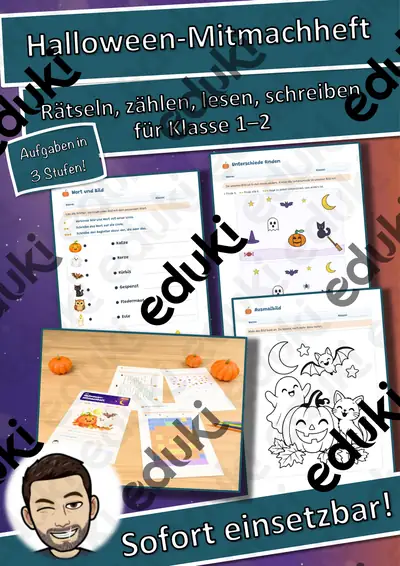
Mein Halloween-Mitmachheft – Rätseln, zählen, lesen, schreiben, 3-fach differenziert (Klasse 1–2)

Brüche Mindmap + 4 Arbeitsblätter mit Lösungen + Lernvideo (QR) – erweitern, kürzen, vergleichen

Teilbarkeit, ggT & kgV Mindmap + 4 Arbeitsblätter mit Lösungen + Lernvideo (QR) – Teiler, Primzahlen

Rabatt & MwSt Mindmap + 4 Arbeitsblätter mit Lösungen + Lernvideo (QR) – neuer und alter Preis

Zinsrechnung Mindmap + 4 Arbeitsblätter mit Lösungen + Lernvideo (QR) – Zinsen, Zinssatz, Kapital & Monatszinsen

Prozentrechnung Mindmap + 4 Arbeitsblätter mit Lösungen + Lernvideo (QR) – Prozentwert, Prozentsatz, Grundwert & Rabatt

Dreisatz Mindmap + 4 Arbeitsblätter mit Lösungen + Lernvideo (QR) – proportional & antiproportional

Sprechstunde - Geometrische Figuren, Körper und Lagebeziehungen - Lass uns reden

Sprechstunde - Oberflächeninhalt und Volumen von Quadern - Lass uns reden

Materialpaket Geometrische Körper - Steckbriefe mit Formeln - Körper Mathe Geometrie

Geometrische Körper - Steckbrief Zylinder - Mathe - Geometrie - Differenziert

Geometrische Körper - Steckbrief Prisma - Mathe - Geometrie - Differenziert

Geometrische Körper - Steckbrief Kegel - Mathe - Geometrie - Differenziert

Geometrische Körper - Steckbrief Kugel - Mathe - Geometrie - Differenziert

Geometrische Körper - Steckbrief Pyramide - Mathe - Geometrie - Differenziert

Geometrische Körper - Steckbrief Quader - Mathe - Geometrie - Differenziert

#edukilights22 Geometrische Körper - Steckbrief Würfel - Mathe - Geometrie - Differenziert #edukilights22

Längeneinheiten, Längenmaße umrechnen, Längeneinheiten

Römische Zahlen Tafelmaterial, Römische Zahlen

Römische Zahlen, Arbeitsblätter Römische Zahlen

Einmaleins Windmühlen (auch Homeschooling) kleines Einmaleins

Malen und rechnen, rechnen und malen ZR 20 - Homeschooling

Einmaleins-Sätze (auch Homeschooling)

Homeschooling Bilder-Einmaleins (kleines Einmaleins) (auch Homeschooling)

Spiel Geometrische Flächen - Ich habe, wer hat?

Geometrische Flächen

Einmaleins Materialpaket - Homeschooling (kleines Einmaleins) (auch Homeschooling)

Einmaleins Domino

Einmaleins - Merk es dir! (kleines Einmaleins)

Einmaleins Fächer, kleines Einmaleins Fächer (auch Homeschooling)

100 Addition Übungsaufgaben (auch Homeschooling)

Übungsheft Homeschooling kleines Einmaleins, Klecksaufgaben (auch Homeschooling)

Übungsheft Multiplikation Übungsheft (auch Homeschooling)

Kleines Einmaleins, Einmaleins Übungsaufgaben (auch Homeschooling)

Einmaleins Spiel (kleines Einmaleins)

Kleines Einmaleins - Einmaleinstabelle - Einmaleins

Einmaleins Bingo (kleines Einmaleins) (auch Homeschooling)
Keine Materialien gefunden – versuch einen anderen Suchbegriff oder Filter.